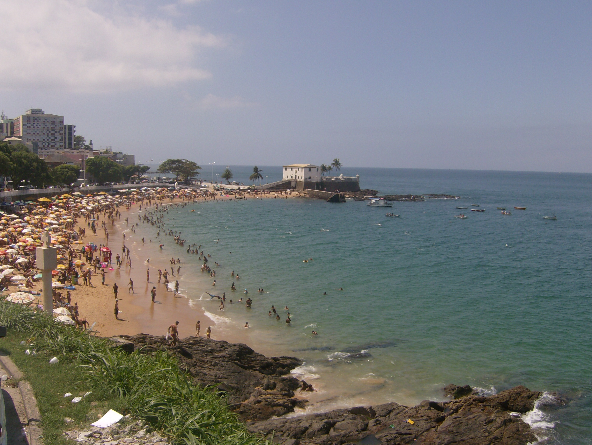
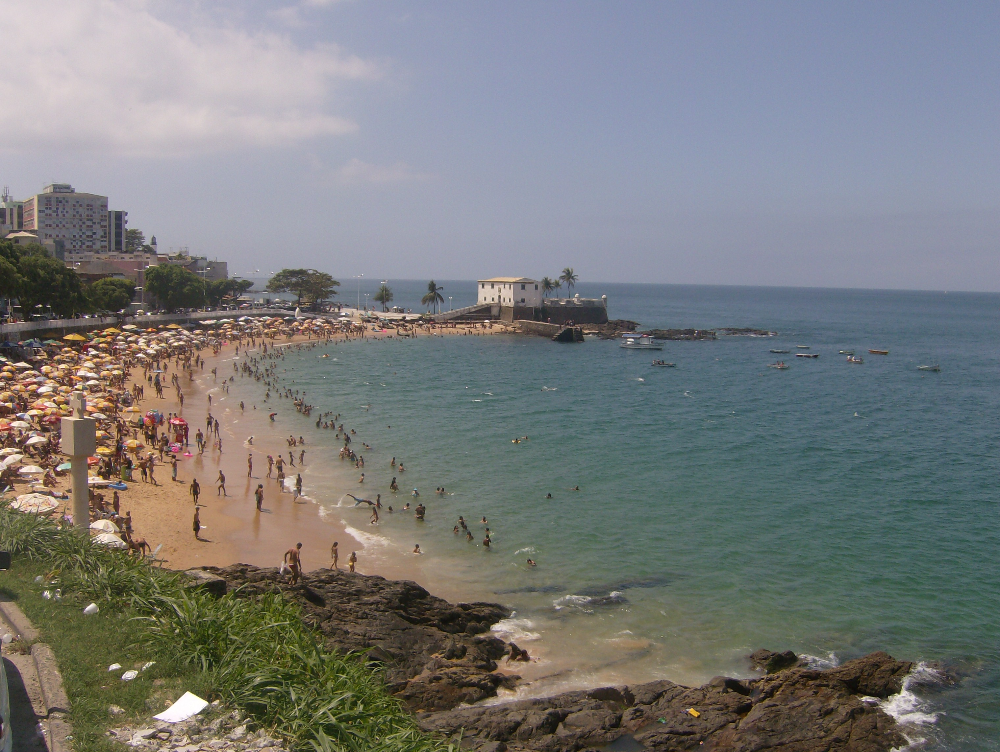

Praia do porto da barra
A praia do Porto da Barra está situada no bairro da Barra, banhada pela Baía de Todos os Santos, é uma praia bastante frequentada finais de semana, por ser uma das melhores da cidade. Uma praia tranquila e boa para banho.
A praia do Porto da Barra está situada no bairro da Barra, banhada pela Baía de Todos os Santos, é uma praia bastante frequentada finais de semana, por ser uma das melhores da cidade. Uma praia tranquila e boa para banho.
